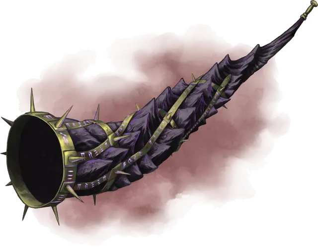

Драакхорн
Draakhorn
Чудесный предмет, артефакт

Драакхорн был подарком от Тиамат в войне между драконами и великанами. Когда-то это был рог её супруга, древнего красного дракона Эфеломона, который она отдала драконам, чтобы помочь им в борьбе с великанами. Драакхорн служит в качестве сигнального устройства и столь велик, что требуются два существа Среднего размера (или одно Большого или большего) чтобы держать его пока третье существо будет трубить в него, заставляя саму землю сотрясаться в унисон. Рог был обожжён, став эбеново-чёрным, и стянут бронзовыми кольцами, на которых мистическим пурпурным пламенем пылают драконьи руны.
Низкий, протяжный звук Драакхорна будоражит обычных животных на несколько миль вокруг и заставляет встрепенуться всех драконов на тысячи миль вокруг, предупреждая о грядущей великой опасности. Шифрованные звуки его раньше использовались чтобы передавать конкретные сообщения. Знания об этом шифре давно канули в лету.
Обладающие знанием об истории Драакхорна знают, что ранее он служил, чтобы предупреждать цветных драконов об опасности - цель, которую Культ Дракона извратил, чтобы вызвать цветных драконов со всего Севера к Колодцу Драконов.